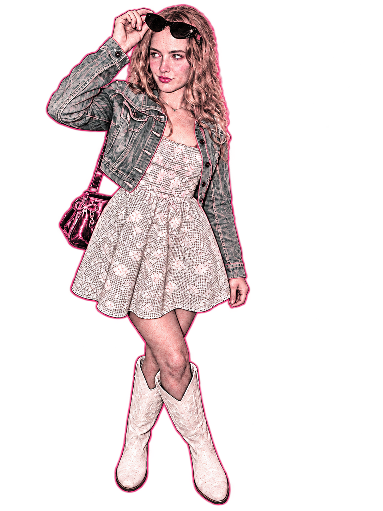

I’m Teicheir. A creator connecting gaming, lifestyle, video, and photography.
Different interests.
My content brings together gaming and vlogs on YouTube, spontaneous short videos on TikTok, and photography on Instagram.
I’m drawn to content with personality: something playful, something visual, or an everyday story told from my perspective.

One creative identity.
This site brings those channels together and gives creative collaborators a place to get to know my style.
Gaming, video, photography — one creative identity, with room to keep experimenting.